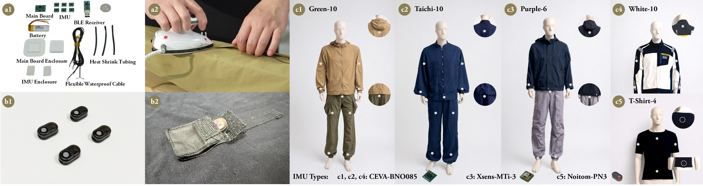
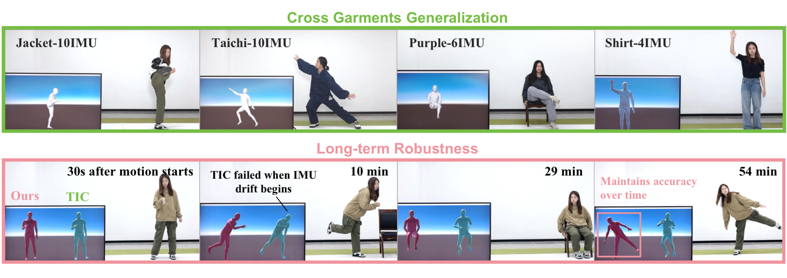
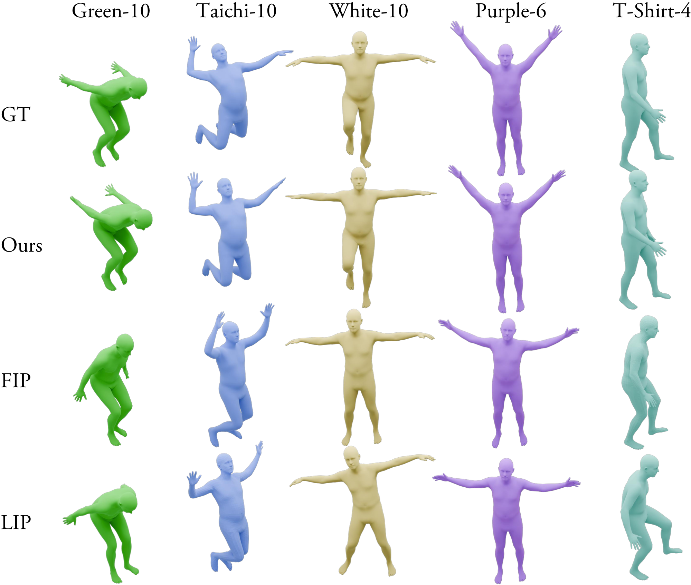
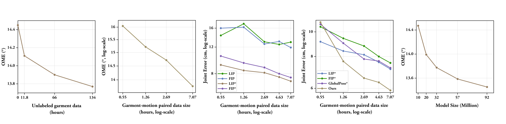

Demo
See it
on the body.
01 / Abstract
Loose garments,
tight-wear signals.
Garment-mounted inertial measurement units (IMUs) offer a promising path toward comfortable, unobtrusive, and scalable human motion capture, yet their performance still lags behind tightly attached inertial systems. The central challenge is that loose-wear IMUs provide only indirect, garment-mediated measurements of the underlying body dynamics. The sensor–body coupling is configuration-dependent, varying with garment material, fit, sensor placement, and IMU layout, while long-term inertial drift further perturbs the observation space. Consequently, identical body motions can induce substantially different inertial measurements across garments, yielding heterogeneous, noisy, and temporally drifting observations. In this paper, we introduce CLOTHO, an IMU canonicalization framework for garment-based inertial motion capture. Rather than directly mapping loose-wear IMUs to body pose, CLOTHO reformulates garment-based motion capture as an IMU canonicalization problem: recovering clean, drift-corrected, and spatially complete tight-wear inertial signals from corrupted and incomplete loose-wear observations. To train and evaluate CLOTHO, we collect the largest garment-based inertial motion capture dataset to date, comprising 12.5M IMU frames, approximately 116 hours of recordings, and five garment designs with diverse materials, layouts, IMU counts, and sensing hardware. Extensive experiments show that a single fixed CLOTHO model achieves state-of-the-art accuracy, zero-shot generalization to unseen garments, and improved robustness during long-term tracking. We also find that CLOTHO demonstrates superior scaling behavior, enabling practical deployment across diverse everyday garments. We will open-source all our software codes, model weights, hardware designs, and datasets to facilitate future research.
02 / Method
Canonicalize first,
then reconstruct.

03 / Hardware
Five garments,
one sensing family.

04 / Results
One model,
across garments and time.
A single CLOTHO model reaches the lowest positional error on every test garment, cutting Pos Error by 42% relative to FIP and LIP, including garments and IMU counts it never saw in that configuration.



We study how garment-based motion capture scales along three axes: data type, model formulation, and model size. Methods on the same axis are trained on matched nested subsets with the same schedule. Panels (a), (b), and (e) report orientation measurement error (OME) on the cross-garment test set; (c) and (d) report Pos Error on Green-10.
Data type. Paired garment–motion recordings supervise the residual canonicalization mapping directly: 7.07 hours of labels lowers OME from 16.05° to 13.78°, but this data is expensive to collect. Unlabeled garment IMUs need no motion ground truth and scale to 101.1 hours of everyday wear; their error keeps falling and has not saturated. The two are complementary. Unlabeled data widens the motion and sensor configurations seen by the encoder, and paired data then anchors the canonical target.
Real versus synthetic. Across every data budget, real-data variants of LIP and FIP stay well ahead of their synthetic counterparts, and the gap does not close as synthetic data grows. Even 0.55 hours of real paired recordings outperforms 7 hours of synthetic garment data, so a modest amount of real supervision is more useful than scaling simulated loose-wear noise alone.
Formulation. We fit ε(m) = A m−α between the amount of real paired data and Pos Error. End-to-end LIP* must undo garment artifacts and recover pose in one model, so extra samples help slowly (α = 0.09). GlobalPose* is stronger (α = 0.15) because its gravity-aware prior partly absorbs root drift, but it still reads raw loose-wear signals. CLOTHO separates IMU canonicalization from motion reconstruction, so each new paired sample goes more directly to the residual correction and yields the steepest trend (α = 0.23).
Model size. With paired data fixed at 7.07 hours, growing CLOTHO from 10.1M to 92.0M parameters — about 9× — reduces OME by only 1.02°. In this regime the limit is data diversity, not capacity. Moving from 32.1M to 92.0M recovers about 0.5° at roughly 7 ms extra latency per frame, which is a poor trade for real-time use.